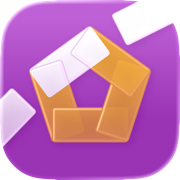

ハンド記録
ハンドボールを深く振り返ろう
完全無料。インストールするだけで、プロの試合を動画と成績で振り返れます。自分の試合も同じように分析できます。
プロの試合をすぐ体験できる
インストール直後からプロの試合が入っています。成績と共に動画を閲覧できます。
推しの活躍をまとめて見返す
気になる選手をタップすると、その選手のハイライトを連続で再生できます。
得点の動きを分析
「ずっとリードしていた」「あの選手の連続得点で流れが変わった」。得点の遷移を時系列で振り返ると、試合に新しい気づきが生まれます。
プロだけじゃない、自分の試合も
紹介したプロの試合も、このアプリで記録したものです。あなたの試合も分析してみよう。
こんな人に
- ハンドボールの試合を、記録で振り返りたい
- 推しの選手の活躍を、まとめて見たい
- 試合の流れや勝敗の分かれ目を分析したい
- 自分の試合も、プロと同じように残したい